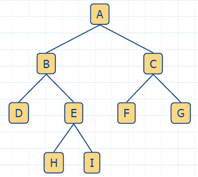
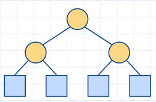
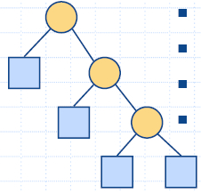
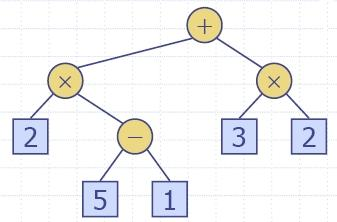
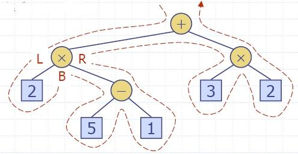
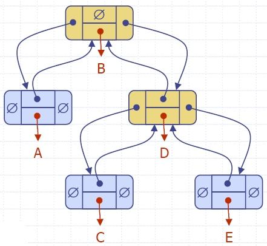
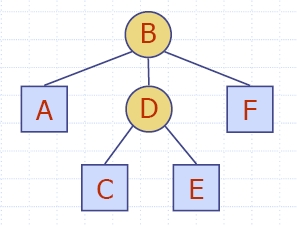

- Двоично дърво, свързано с аритметичен израз:
- вътрешни възли - операции;
- външни възли - операнди (аргументи).
- Пример: дърво за аритметичния израз
2 * (a −1) + (3 * b)
|  |
|
| |
|
 |
|
|   |
|
Postorder обхождане на двоично дървоvoid binaryPreorderPrint(const Tree& T, const Position& v)
{ cout << v.element(); // print element
if (isInternal(v)) // visit children
{ cout << " ";
binaryPreorderPrint(T, T.leftChild(v));
binaryPreorderPrint(T, T.rightChild(v));
}
}
Изчисляване на аритметичен изразvoid binaryPostorderPrint(const Tree& T, const Position& v)
{ if (isInternal(v)) // visit children
{ cout << " ";
binaryPostorderPrint(T, T.leftChild(v));
binaryPostorderPrint(T, T.rightChild(v));
}
cout << v.element(); // print element
}
|  |
|
| Algorithm evalExpr(v) if isExternal (v) return v.element () else x ← evalExpr(leftChild (v)) y ← evalExpr(rightChild (v)) ◊ ← operator stored at v return x ◊ y |
 |
|
| Algorithm inOrder(v) if isInternal (v) inOrder(leftChild (v)) visit(v) if isInternal (v) inOrder(rightChild (v)) |
void binaryInorderPrint(const Tree& T, const Position& v)
{ if (isInternal(v)) // visit left child
binaryInorderPrint(T, T.leftChild(v));
cout << v.element(); // print element
if (isInternal(v)) // visit right child
binaryInorderPrint(T, T.rightChild(v));}
Пример: Двоичното дърво е: 6(2(1, 4), 9(8,-))
 |
Търсим 4: 4 < 6 - ляво 4 > 2 - дясно 4 = 4 - намерено! Търсим 7: 7 > 6 - дясно 7 < 9 - ляво 7 < 8 - ляво листо - няма! |
Времето t за търсене в двоичното дърво T е пропорционално на височината на T, т.е. t >= O(log n) и t <= Omega(n).Position searchBinaryTree(const Tree& T, const Position& v, const Object& e)
{ if (isInternal(v))
if (v.element() == e) return v; // found!
else if (v.element() < e)
searchBinaryTree(T, T.leftChild(v), e); // search left subtree
else searchBinaryTree(T, T.rightChild(v), e); // search right subtree
else return ... // not found!
}
|  |
|
Позициите са представени като рангове (индекси)
на вектор (масив).
| 4 успоредни вектори, например:
- obj съдържа обектите на контейнера; - pred съдържа ранга на родителя; - left съдържа ранга на лявото дете; - right съдържа ранга на дясното дете. rank: 0 1 2 3 4 5 6 7 8 9 obj: - A B C D E F G H I pred: - - 1 1 2 2 3 3 5 5 left: - 2 4 6 - 8 - - - - right: - 3 5 7 - 9 - - - - Или един вектор от обекти: (A,-,2,3), (B,1,4,5), (C,1,6,7),(D,2,-,-), (E,2,8,9), (F,3,-,-), (G,3,-,-), (H,5,-,-), (I,5,-,-) |
 |
 |
|  |
 |